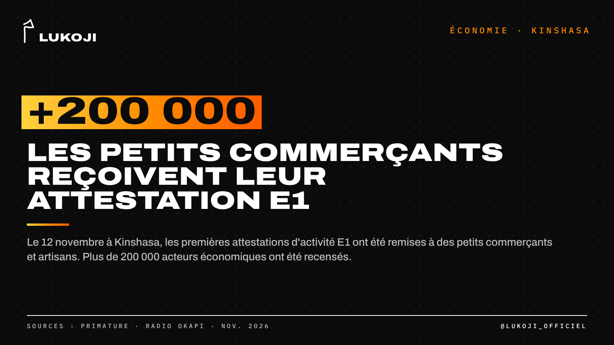

À la une · ÉCONOMIE · KINSHASA
Informel : les premiers petits commerçants de Kinshasa reçoivent leur attestation E1
Le 12 novembre 2026, au Centre financier de Kinshasa, des petits commerçants et artisans ont reçu les premières attestations d'activité E1 et les premières cartes d'entreprenant. Pour beaucoup, c'est la première fois que l'État reconnaît leur activité sur papier.
Lire l'article · 2 min